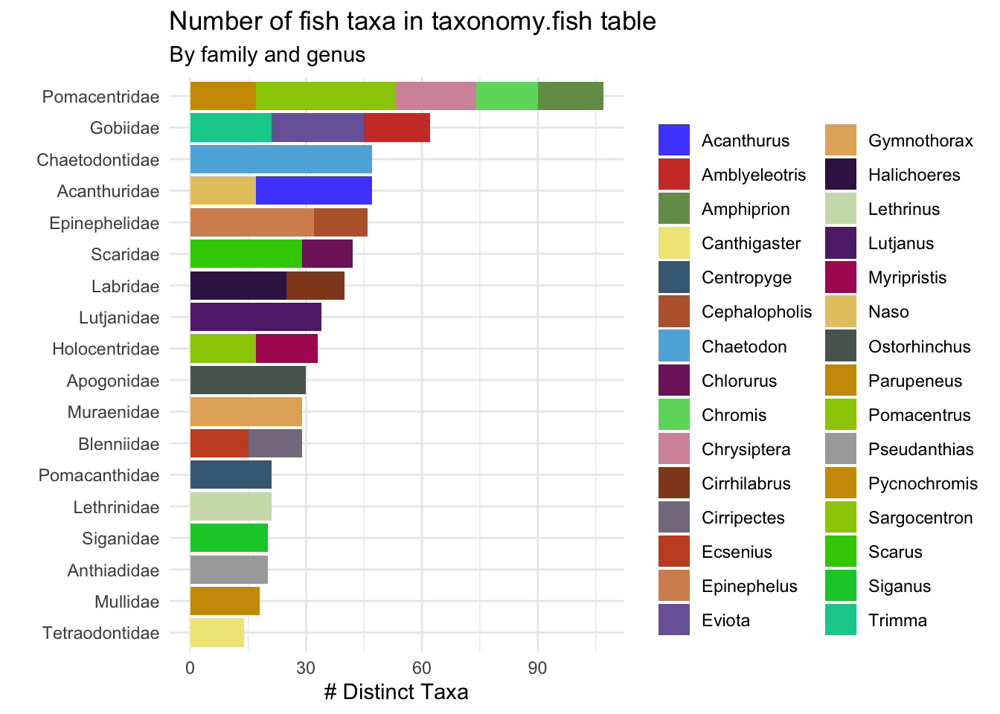

graph LR
%% Main project node
pristine["pristine-seas"]
%% First level - dataset categories
reference_group["Reference Datasets"]
method_group["Method Datasets"]
%% Reference datasets
exp["expeditions/"]
tax["taxonomy/"]
look["lookup/"]
%% Method datasets
uvs["uvs/"]
pbruv["pbruv/"]
sbruv["sbruv/"]
edna["edna/"]
other["Other Methods..."]
%% UVS tables
sites["sites"]
stations["stations"]
%% Fish transect tables
blt_group["Fish Belt Transect Tables"]
blt1["blt_stations"]
blt2["blt_observations"]
blt3["blt_biomass_by_taxa"]
%% LPI tables
lpi_group["Benthic LPI Tables"]
lpi1["lpi_stations"]
lpi2["lpi_counts"]
lpi3["lpi_cover_by_taxa"]
%% Taxonomy tables
fish["fish"]
benthos["benthos"]
inverts["inverts"]
%% Expeditions tables
info["info"]
exp_sites["sites"]
%% Connections
pristine --> reference_group
pristine --> method_group
reference_group --> exp
reference_group --> tax
reference_group --> look
method_group --> uvs
method_group --> pbruv
method_group --> sbruv
method_group --> edna
method_group --> other
uvs --> sites
uvs --> stations
uvs --> blt_group
uvs --> lpi_group
blt_group --> blt1
blt_group --> blt2
blt_group --> blt3
lpi_group --> lpi1
lpi_group --> lpi2
lpi_group --> lpi3
tax --> fish
tax --> benthos
tax --> inverts
exp --> info
exp --> exp_sites
%% Styling with improved visibility and contrast
classDef root fill:#004165,color:#ffffff,stroke:#002e48,stroke-width:2px,rx:8,ry:8
classDef group fill:#f8f9fa,color:#000000,stroke:#343a40,stroke-width:1px,stroke-dasharray: 5 5,rx:5,ry:5
classDef refDataset fill:#d4edda,color:#000000,stroke:#28a745,stroke-width:2px,rx:8,ry:8
classDef methodDataset fill:#cce5ff,color:#000000,stroke:#0d6efd,stroke-width:2px,rx:8,ry:8
classDef table fill:#ffffff,color:#000000,stroke:#6c757d,stroke-width:1px,rx:3,ry:3
classDef tableGroup fill:#f8f9fa,color:#000000,stroke:#343a40,stroke-width:1px,rx:3,ry:3
class pristine root
class reference_group,method_group group
class exp,tax,look refDataset
class uvs,pbruv,sbruv,edna,other methodDataset
class sites,stations,info,exp_sites,blt1,blt2,blt3,lpi1,lpi2,lpi3,fish,benthos,inverts table
class blt_group,lpi_group tableGroup
BigQuery
Centralized database for integrated expedition data
Overview
The Pristine Seas Science Database is a centralized, modular system hosted in Google BigQuery that serves as the foundation of our data management infrastructure. This system integrates ecological data collected across more than a decade of scientific expeditions, supporting high-integrity, reproducible research on marine biodiversity and informing global ocean conservation policy.
Why BigQuery?
Google BigQuery offers several advantages for marine ecological data:
- Scalability: Handles our growing dataset spanning 40+ expeditions without performance degradation
- Integration: Seamlessly connects with our R-based analysis workflows
- Collaboration: Enables standardized access across our distributed research team
- Future-proofing: Provides a robust platform that can evolve with our research needs
Note: BigQuery is were Global Fishing Watch data lives and we have access to the raw backend data.
FAIR Data Principles
Our database implementation adheres to the FAIR data principles:
Findable
- Unique and unified IDs
- WoRMS-linked taxonomy
- Consistent spatial hierarchy
Accessible
- Query-ready BigQuery tables
- Controlled access and permissions
- Varied connection options
Interoperable
- Spatial reference system
- Harmonized taxonomic backbone
- Consistent units (cm, g, m²)
Reusable
- Comprehensive metadata
- Reproducible code
- Clear provenance6
Database Architecture
The Pristine Seas Science Database is organized around two major dataset groups that balance flexibility with consistency:
- Method Datasets: Specific to each survey technique (UVS, BRUVS, eDNA, etc.)
- Reference Datasets: Shared taxonomic, spatial, and lookup tables providing a unified backbone
Database Organization
For the complete database documenation please refer to the Pristine Seas Database Documentation.
Common Dataset Structures
Each method dataset follows a consistent pattern with tables organized into logical categories that support various analytical needs. This standardized structure enables efficient querying, cross-method integration, and reproducible science.
Standard Table Types
- Site Tables (
sites,[method]_sites)- One row per survey site or deployment
- Contains spatial information, geographic coordinates, habitat descriptions, and context
- Key tables:
expeditions.sites: aggregates all survey sites across methods and expeditions over timeuvs.sites: all underwater visual survey sites with method specific metadata.sub.sites: all sub dive sites with method specific metadata.
- Station Tables (
[method]_stations)- One row per sampling unit (e.g., depth strata, replicate)
- Includes spatial and temporal information, survey effort, and method-specific metadata
- Include aggregated metrics of interest (e.g., fish biomass, % coral cover)
- Functions as a primary unit for analysis and comparison
- Key tables:
uvs.lpi_stations: all benthic LPI stations, including transect length, depth, habitat type, and summary metrics.uvs.blt_stations: all fish belt transect stations, including transect length, depth, habitat type, and summary metrics.sub.stations: all submersible survey stations (horizontal transects) done with the sub.
- Observation Tables (
[method]_observations)- Contains individual records (e.g., fish counts, benthic points, video annotations)
- Stores raw QAQC’d ecological data with validated taxonomic identifications
- Key tables:
uvs.lpi_counts: all benthic LPI counts, including taxonomic identifications (field_name,morphotaxa,accepted_aphia_ID).uvs.blt_observations: all fish belt transect observations, including taxonomic identifications and estimated biomass.
- Station-Taxa Tables (
[method]_[metric]_by_[dimension])- Aggregated analysis-ready metrics
- Pre-calculated to standardize common analytical outputs
- Enables efficient cross-site and cross-method comparisons
- Key tables:
uvs.cover_by_taxa: total point and % cover by morphotaxa and station.uvs.biomass_by_taxa: fish abundance and biomass by taxa and station.pbruvs.Maxn_by_station: Max N and length estimates per taxa per station
Data Flow: Field to Database Pipeline
The integration of expedition data into BigQuery follows a standardized workflow that ensures data quality and consistency:
flowchart LR
subgraph Field[Field]
direction TB
A[Collection] --> B[Validation]
B --> C[Ship Storage]
end
subgraph Process[Processing]
direction TB
D[Drive Backup] --> E[Pipeline Processing]
E --> F[Quality Control]
end
subgraph Database[Database]
direction TB
G[BigQuery Ingestion] --> H[Analysis-Ready Data]
end
Field --> Process
Process --> Database
classDef field fill:#004165,color:#ffffff,stroke-width:1px
classDef process fill:#8EBDC8,color:#000000,stroke-width:1px
classDef db fill:#E63946,color:#ffffff,stroke-width:1px
class Field,A,B,C field
class Process,D,E,F process
class Database,G,H db
Process Steps
- Field Collection: Researchers collect and record data using standardized methods and digital fieldbooks
- Initial Validation: Field-level data checks ensure completeness and quality
- NAS Storage: All expedition data is securely stored on the ship’s Network Attached Storage
- Google Drive Backup: Post-expedition, data is organized and backed up to Google Drive
- Pipeline Processing: Each method’s data undergoes standardized processing via code in expedition repositories
- Quality Assurance: Automated and manual checks verify data integrity
- Database Ingestion: Processed data is ingested into the appropriate BigQuery tables
- Analysis: Data becomes available for standardized analysis workflows
Access and Use
The Pristine Seas Science Database is designed to be accessible through multiple interfaces.
Rstudio
The most common way to interact with our BigQuery database is through R, using the familiar tidyverse workflow.
Establishing a Connection
Setting up a connection is straightforward:
# Load required packages
library(DBI)
library(bigrquery)
library(tidyverse)
# Create a database connection
bq_connection <- DBI::dbConnect(bigrquery::bigquery(),
project = "pristine-seas",
billing = "pristine-seas")This code establishes a connection to the entire database, allowing you to explore datasets and tables directly from the Connections pane in RStudio. The first time you run this code, you’ll be prompted to authenticate with your Google account.
Using dplyr Verbs
The real power comes from using familiar dplyr verbs directly with BigQuery tables—no SQL knowledge required:
df <- tbl(bq_connection, "taxonomy.fish") |>
group_by(family, genus) |>
summarize(n_taxa = n_distinct(accepted_aphia_id),
.groups = "drop") |>
arrange(desc(n_taxa)) |>
head(30) |>
collect()
df |>
ggplot()+
geom_col(aes(x = fct_reorder(family, n_taxa, sum),
y = n_taxa,
fill = genus),
show.legend = T)+
theme_minimal()+
coord_flip()+
labs(x = "", y = "# Distinct Taxa", fill = "",
title = "Number of fish taxa in taxonomy.fish table",
subtitle = "By family and genus")+
paletteer::scale_fill_paletteer_d("ggsci::default_igv")
What makes this approach powerful:
- BigQuery does the heavy lifting – All filtering, grouping, and summarizing happens in the database
- Only results are transferred – Data never loads into memory until you call
collect() - Familiar syntax – The same dplyr verbs you already use with local data frames
- Readable code – Complex queries expressed in clean, maintainable R code
Google BigQuery Console
The database can also be accessed directly through the Google BigQuery Console:
- Visit console.cloud.google.com/bigquery
- Navigate to the
pristine-seasproject - Use the query editor to write and execute SQL queries
- Explore tables, schemas, and query history
The console provides a user-friendly interface for exploring table structures, examining data samples, and running ad-hoc queries without writing code.
Access Management
Access to the Pristine Seas Science Database is managed through Google Cloud IAM:
- Team Members: Full read access to all datasets
- Collaborators: Read access to specific datasets relevant to their work
- Partners: Access via shared exports or temporary read credentials
- Public: Access to published, non-sensitive data via data packages (still TBD)
To request access, contact the database administrator with your Google account email and purpose.
Best Practices
When working with the Pristine Seas Science Database:
- Minimize data transfer: Filter data in BigQuery before collecting to R
- Use primary keys: Join tables using established keys (
ps_station_id,ps_site_id) - Reproducible queries: Document your queries in Quarto documents
- Analysis patterns: Build on established workflows in expedition repositories
Maintenance
The Pristine Seas Science Database is actively being developed and continously improved to meet the needs of our team.